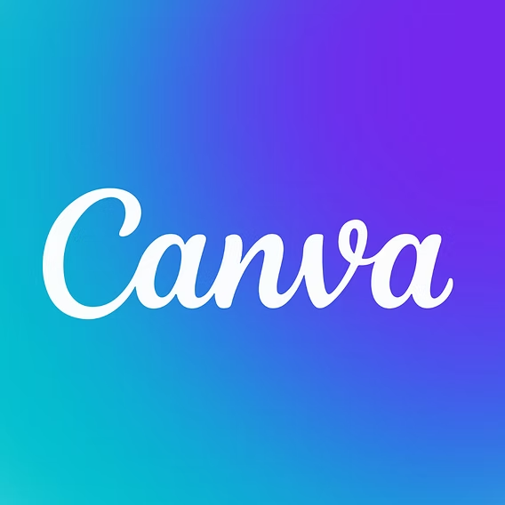

WIP: on Journeyy!!!
????????
Mandiri dan
profesional
berakhlak mulia
Visi
Mencetak individu dan kelompok yang mandiri dan profesional di bidang informatika, memiliki jiwa leadership dan entrepreneurship, serta berorganisasi berlandaskan akhlak mulia.
WIP:
Journey!!
WIP on Utility
